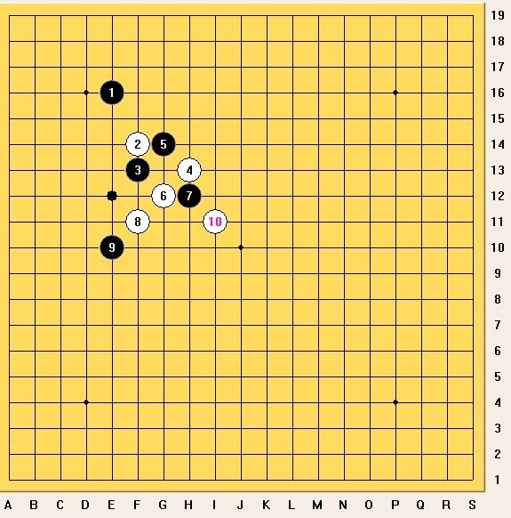

2009年北京高校精英赛自战棋评
#1 2009年北京高校精英赛自战棋评 作者：四川连珠魂 发表时间：2011-1-30 23:35:23
2009 年北京高校精英赛自战棋评
很荣幸因为段然的介绍，我连续参加了 2008 年和 2009 年两届北京高校五子棋比赛， 2 次比赛我都报名参加的无禁组，下面具体分析下在 09 年无禁组比赛中我的其中 3 盘对局。
无禁组采用的是一手交换规则，棋盘是 19*19 路的，因为是一种新的规则还没有固定的开局定式所以更体现出了大局观和计算力的比拼。首先向大家介绍的是我和李想的对局，比赛前我就听朋友说起李想下棋比较厉害，在比赛时我更是小心翼翼。

他开局第
1
手走了
E16,
我立刻选择了交换。接着他第
2
/*760*90，创建于2012-2-9*/ var cpro_id = 'u761865';
#2 Re:2009年北京高校精英赛自战棋评 作者：儒释道 发表时间：2011-1-31 11:44:37
［ 儒释道 于 2011-1-31 11:30:51 时花2000000000000000000000金币送鲜花一千亿朵］如果爱五子棋网能发19路棋谱就好了，免得魂大哥这么费劲
 ，看贴的还要登陆才能看到图
，看贴的还要登陆才能看到图［此帖子已被 儒释道 在 2011-1-31 11:58:37 编辑过］
#3 Re:2009年北京高校精英赛自战棋评 作者：蓝天蓝 发表时间：2011-1-31 11:45:27
受教了
#4 Re:2009年北京高校精英赛自战棋评 作者：虎哥 发表时间：2011-1-31 17:55:52
感谢魂大师对交大的支持